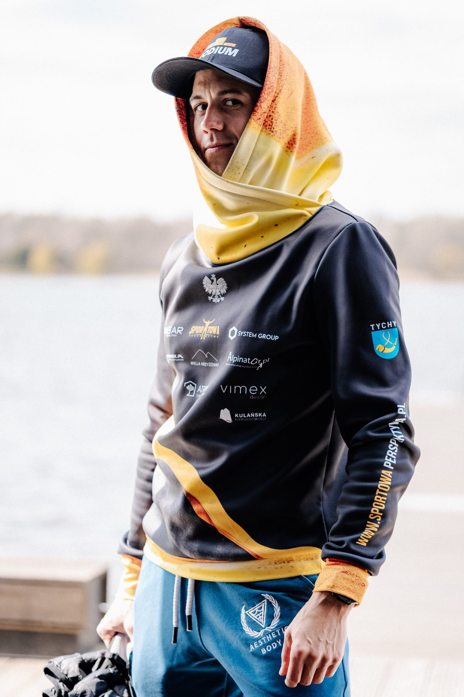
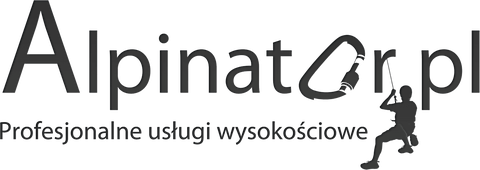
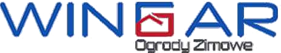
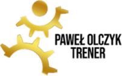
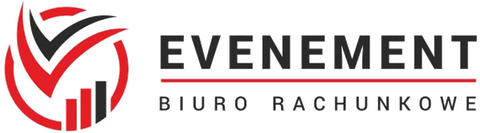
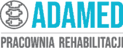
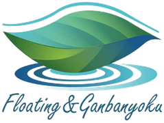
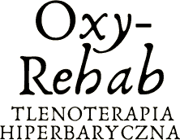
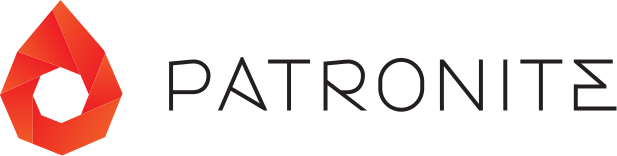

Marketing
Oznaczam partnerów w publikacjach i dziękuję im w filmach z wyzwań. Pod każdą relacją z trasy są marki, które mnie wspierają. Podczas Backyard na Dziko prowadzimy transmisję na żywo przez 72 godziny, z rubryką partnerów.

Współpraca
Od 2020 roku udowadniam, że jestem dobrą inwestycją. Twoja marka jest obecna przy chwilach, które zmieniają postrzeganie możliwości człowieka.
Zasięg
Media społecznościowe prowadzę sam, autentycznie i na bieżąco, także z trasy. Tak wyglądały ostatnie 90 dni, od 28 października 2025 do 25 stycznia 2026.
Obserwujący: Facebook 11 435, Instagram 6 815, TikTok 1 192, YouTube 691.
Korzyści
Oznaczam partnerów w publikacjach i dziękuję im w filmach z wyzwań. Pod każdą relacją z trasy są marki, które mnie wspierają. Podczas Backyard na Dziko prowadzimy transmisję na żywo przez 72 godziny, z rubryką partnerów.
Logotyp na koszulce startowej, koszulce kolarskiej, bluzie, czapce i spodenkach, na plakatach wydarzeń, w prezentacjach podczas moich wystąpień, a nawet na samochodzie.
Skojarzenie z odwagą, trzeźwością i pomaganiem. Od 2017 roku łączę wyzwania ze zbiórkami: w samych zbiórkach z lat 2022–2026 to ponad 250 tys. zł dla dzieci i fundacji.
Jestem na spotkaniach, galach i eventach Twojego środowiska. Przykłady: wystąpienie dla tyskich pośredników nieruchomości i spotkanie dla uczniów w Centrum Biznesowym Atrion, organizowane razem z partnerami.
We współpracę inwestują firmy z bardzo różnych branż: biuro nieruchomości, przedsiębiorstwo energetyki cieplnej, outsourcing procesowy, budownictwo przemysłowe, centrum biznesowe, twórcy przestrzeni biurowych, producent ogrodów zimowych i alpinizm przemysłowy.
Konsultacje dla pracowników z treningu, odżywiania i regeneracji oraz szkolenie wellbeingowe „Dźwignia aktywności i odżywiania” dla całego zespołu.
Szkolenie dla firm

Pakiety
Cztery poziomy partnerstwa. Każdy kolejny zawiera wszystko z poprzedniego. Lista korzyści nie jest zamknięta: dopasujemy działania do profilu i potrzeb Twojej marki.
| Świadczenia | PartnerPodstawowa ekspozycja markibez limitu | Partner OficjalnyBudowanie szerokiej rozpoznawalności4 miejsca | Partner GłównyWysoka rozpoznawalność i aktywne zaangażowanie2 miejsca | Partner StrategicznyStrategiczne partnerstwo i silna synergia1 miejsce |
|---|---|---|---|---|
| Strój i sprzęt | ||||
| Logotyp na przodzie koszulki startowej | tak | tak | tak | tak |
| Logotyp na tyle koszulki startowej | nie | tak | tak | tak |
| Logotyp na koszulce kolarskiej, przód i tył | nie | tak | tak | tak |
| Logotyp na bluzie, przód i tył | nie | tak | tak | tak |
| Logotyp na rękawach koszulki, koszulki kolarskiej i bluzy | nie | nie | tak | tak |
| Logotyp na odzieży support-teamu podczas projektów | nie | nie | tak | tak |
| Branding mojego samochodu | nie | nie | dodatkowo płatny | tak |
| Obecność online | ||||
| Logotyp na głównym zdjęciu mojej strony | tak | tak | tak | tak |
| Logotyp na zdjęciu w tle mojego fanpage’a | tak | tak | tak | tak |
| Opis, logotyp i link na mojej stronie | tak | tak | tak | tak |
| Oznaczanie marki w moich publikacjach | tak | tak | tak | tak |
| Podziękowania w filmach z wyzwań | tak | tak | tak | tak |
| Marka w rubryce sponsorów na mojej karcie zawodnika ITRA | nie | tak | tak | tak |
| Nazwa firmy w tytule mojego fanpage’a | nie | nie | nie | tak |
| Wydarzenia i transmisje | ||||
| Logotyp w prezentacjach podczas wystąpień | nie | tak | tak | tak |
| Logotyp na plakatach wydarzeń sportowych | nie | tak | tak | tak |
| Moja obecność na spotkaniach, galach i eventach | nie | nie | tak | tak |
| Rubryka partnera podczas transmisji na żywo | nie | nie | Partner Główny | Partner Strategiczny |
| Nazwa firmy w rubryce „drużyna” na zawodach | nie | nie | nie | tak |
| Dla Twojej firmy | ||||
| Konsultacje dla pracowników: trening, odżywianie, regeneracja | nie | tak | tak | tak |
| Szkolenia wellbeingowe dla Twojej firmy | nie | nie | tak | tak |
| Wspólne, profesjonalne materiały marketingowe na mój koszt | nie | nie | tak | tak |
| Dedykowane upominki i eksponaty partnerskie | nie | nie | tak | tak |
| Wspólne inicjatywy sportowo-biznesowe | nie | nie | nie | tak |
| Prelekcje motywacyjne dla Twojej firmy lub wskazanych środowisk | nie | nie | nie | tak |
| Wyjazd integracyjny dla Twojej firmy | nie | nie | nie | tak |
| Wyłączność | ||||
| Wyłączność w Twojej kategorii biznesowej | nie | nie | tak | tak |
| Wyłączny logotyp na spodenkach i legginsach startowych | nie | nie | nie | tak |
| Wyłączny logotyp na czapce lub opasce startowej | nie | nie | nie | tak |
Podejście
„Pieniądze są ważne, ale nie stoją ponad autentycznością, zaufaniem i moralnością.”
Partnerzy



Alpinator„Z Andrzejem współpracuję od początku 2020 roku, a kibicuję mu znacznie dłużej. Od tego czasu poczynił znaczący postęp w sporcie. Z amatora stał się profesjonalistą. W pierwszych dwóch miesiącach współpracy zdobył Mistrzostwo Polski oraz wygrał 24h maraton pływacki. Dalszą historię znacie – osiągnął jeszcze więcej i wiem, że ten człowiek nie ma limitu, a dotychczasowe osiągnięcia traktuje jako rozgrzewkę. Dla niego sport to jak dla nas oddech. Do niedawna Andrzej, pracując na etacie, prowadził przez wiele lat niesamowicie konsekwentny i uparty tryb życia. Pamiętam, jak wstawał o godzinie 3:45 w zimie, by zrobić biegowy trening na mieście; dalej o godzinie 6:00 miał już drugi trening – motoryczny, by na 8:00 dojechać rowerem do pracy i wykonywać pracę handlowca do godziny 16:00. Po drodze do pracy zaliczał jeszcze oczywiście morsowanie w jeziorze. Człowiek od zadań specjalnych. Wielozadaniowy, niezwykle uparty, konsekwentny, zdyscyplinowany i profesjonalny. Absolutnie sfokusowany na kwestiach tylko rozwojowych. Poza czasem spędzanym w pracy, na treningu czy we śnie zastaniesz go jeszcze w jednym miejscu – przy swojej rodzinie, gdzie jest równie zaangażowany w rolę taty, męża, co w rolę sportowca. Człowiek kompletny i prawdziwy. Z dumą wspieram, kibicuję i mogę jedynie cieszyć się tym, że dokładam do tej historii swoją cegiełkę, co polecam też innym, bo to INWESTYCJA! Andrzej swoją historią i postawą bardzo korzystnie wpływa na wizerunek firmy, którą prowadzę.”
„Dlaczego Andrzej? No cóż – kiedy my rano logujemy się do życia, on już jest po 2 treningach, kiedy my narzekamy, że nam wieje w twarz podczas biegu, on powoduje, że to wiatr narzeka na Andrzeja, jak my wynajdujemy kolejne kreatywne pomysły, jak tu odpuścić, on znajduje setkę więcej powodów, by robić swoje. Człowiek orkiestra, pomagacz, społecznik, żywy przykład pozytywnej przemiany i wulkan energii i dobrych wibracji! Sam też biegam i podejmuję wyzwania z kosmosu – ale to, co wyczynia Andrzej, to jest przy tym galaktyka. To było to coś od pierwszego wejrzenia – patrzysz na takiego wariata i wiesz, że to mega większy dzikus od Ciebie! Andrzeja wspieramy i polecamy każdemu!”

WINGAR, ogrody zimowe„Sportowa Perspektywa to przede wszystkim PROFESJONALIZM! Rzetelność w działaniach i wielkie zaangażowanie. Andrzej naszym zdaniem za priorytet ustawił sobie dążenie do celu w zdrowym podejściu. Imponuje nam to zbalansowane i odpowiedzialne połączenie. Dla Andrzeja nie istnieje zdanie »nie da się«. Skupia się na możliwościach, nie na przeszkodach. Andrzej swoim zaangażowaniem, wielkim sercem, szczerym uśmiechem na twarzy i rzetelnym podejściem przyciągnął nas swoją energią, charakterem i autentycznością. Chce się przy tym być i z przyjemnością w niego inwestować. Jego motywacja jest ogromna i udziela się wszystkim w zasięgu. Wspieranie Andrzeja to wielka przyjemność, WSZYSTKIM BARDZO POLECAMY!”
„Andrzej to bardzo otwarty, pełny energii i ambitny zawodnik. Zawsze gotowy, by trenować na 110%! Dla trenera to niezwykle komfortowa sytuacja, gdy podopieczny nakręca się każdym treningiem, jest zdeterminowany w dążeniu do celu i nie boi się ciężkiej treningowej pracy. Trener w tym układzie jest bezpiecznikiem i sternikiem procesu treningowego, mając pewność, że serce układu, którym jest Andrzej, zawsze będzie działało jak należy.”

Paweł Olczyk, trener„Obserwując Andrzeja w social mediach, na myśl nasuwa się jedno określenie: profesjonalista. Współpraca z Andrzejem to czysta przyjemność, zawsze podaję go jako przykład dla innych podopiecznych, jeśli chodzi o systematyczność i podejście do treningu. Przez te 1,5 roku współpracy Andrzej nie odwołał żadnego treningu, nawet jeśli nie mogliśmy się spotkać w danym momencie, to realizował rozpiskę we własnym zakresie. Jeśli swoje podejście i zaangażowanie do sportu przełoży na podopiecznych i klientów, to cytując klasyka: »Będzie Pan zadowolony«. Profesjonalizm, dbanie o szczegóły, zaangażowanie to hasła, które idealnie pasują do Sportowej Perspektywy!”

Evenement„Znam Andrzeja jeszcze z czasów dzieciństwa. Zawsze miał pełno pomysłów w głowie i wszędzie było go pełno. Czasem z ukrycia, ale obserwowałam go na jego różnych życiowych etapach. Kiedyś jednak bliżej mu było do największych osiedlowych łobuzów niż do grzecznego towarzystwa. Przyszedł jednak czas, gdy zaczął swoją sportową drogę, i od tej pory kibicuję mu jeszcze bardziej. Andrzej to przede wszystkim dobrze wychowany i doświadczony życiowo człowiek. Nigdy nie zawiódł i jak się do czegoś zobowiązał, to zawsze doprowadzał to do końca. Niezwykle rodzinny i szczery przyjaciel, a do tego profesjonalista. Z dumą, znając jego historię, kibicuję mu na kolejne lata jego działalności.”

Adamed, pracownia rehabilitacji„W naszej pracowni mamy maksymę: »rób to, co kochasz, a nie przepracujesz ani jednego dnia«. Mamy to ogromne szczęście, że nasza praca jest naszą pasją. Dlatego zawsze wspieramy ludzi o podobnych poglądach, stawiających sobie nowe cele. Taką właśnie osobą jest Andrzej. Niesamowicie zdeterminowany i ambitny człowiek i sportowiec, który konsekwentnie i nieprzerwanie zmierza do osiągnięcia wytyczonych celów. Za każdym razem, gdy tylko ciało Andrzeja wymaga naprawy, z którą samemu nie umie sobie poradzić, melduje się u nas na małe naprawianie. Pomagamy, śledzimy, trzymamy kciuki i życzymy samych sukcesów.”

Float Tychy„Wszystko zaczęło się od śledzenia w social mediach. Obszerne posty, mnóstwo relacji i uśmiech od ucha do ucha. Opisać Andrzeja jednym słowem? Nie da się! Andrzej – osoba pełna pasji, charakteru, zacięcia do walki, profesjonalista, serdeczny, pomocny i można by tak wyliczać bez końca. W wielkim skrócie… to człowiek, który pomimo swego młodego wieku wiele przeszedł, wiele doświadczył. Dlatego dziś jest osobą, która kocha życie, nie ocenia innych i stwarza wokół siebie cudowną aurę. To człowiek, którego warto poznać i mieć w gronie swoich znajomych. Od paru lat mocno kibicujemy i trzymamy mocno kciuki.”

Tlenoterapia„Padło pytanie: dlaczego wybraliśmy Andrzeja? Odpowiedź jest dla nas prosta – wspieramy sportowców z sercem do ich pasji. Obserwujemy Andrzeja od dawna i wiemy, jak wiele pokonał w swoim życiu, aby być takim właśnie człowiekiem, by być w tym właśnie miejscu życiowym i sportowym. Chcemy go wspierać, motywować i pomagać w spełnianiu marzeń!”
„Do współpracy z Andrzejem skłoniło mnie przede wszystkim jego podejście do sportu i radość, jaką czerpie z życia i z tego, co robi. Swoją pozytywną energią zarazi każdego i zmotywuje nawet najbardziej zatwardziałego kanapowca! Moim celem jest wsparcie jego procesu regeneracji zarówno przed, jak i po zawodach czy treningu. Andrzej wkłada całe swoje serce w ciągły rozwój zarówno fizyczny, jak i mentalny, oby więcej takich sportowców!”
„Dbanie o każdy szczegół, perfekcjonizm, sumienność i wytrwałość – to na pewno cechuje Andrzeja z mojej perspektywy jako sportowca. Sportowa Perspektywa jako firma nie może charakteryzować się inaczej!”
W mediach
Wyzwania relacjonowały największe redakcje w Polsce. Partnerzy są przy tym na koszulce, w kadrze i w podziękowaniach.
 Sport odmienił jego życie2025
Sport odmienił jego życie2025 Niemożliwe nie istnieje. 2Hard – ekstremalny triathlon z misją2025
Niemożliwe nie istnieje. 2Hard – ekstremalny triathlon z misją2025 Temat numeru: Jak się odbudować?2025
Temat numeru: Jak się odbudować?2025 Każdego dnia spędza minimum 10 godzin na szlaku2023
Każdego dnia spędza minimum 10 godzin na szlaku2023 Bieganie – pomaganie2023
Bieganie – pomaganie2023
Jak zacząć
Współpraca z wartościami: czego mogą oczekiwać partnerzy.

Stałe wsparcie od 10 zł miesięcznie, także dla osób prywatnych.
Szukasz partnera dla swojej marki lub prelegenta na wydarzenie? Napisz kilka słów o swoim pomyśle. Dopasujemy formę współpracy do Twoich potrzeb.